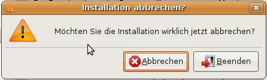

Das internet schrieb einen Brief
!!1!!!!(elf)!!!1!!!
Pavel bringt es einfach auf den Punkt.
Das internet schrieb einen Brief
!!1!!!!(elf)!!!1!!!
Pavel bringt es einfach auf den Punkt.
Tja... leider nicht so einfach wie ich dachte.
Meine Versuche mit BZR die verbindung herzustellen, haben leider nicht geklappt. Das hg-plugin dort läuft mit der aktuellen Version leider nicht mehr - und hat auch keine Unit-Tests, sonst hätte ich mir ja schon mal etwas Zeit genommen um zu schauen woran es liegt.
Aber so...
Egal.
Was doch geklappt hat, ist mit hgimportsvn einen svn checkout zu machen. Mit einem lokalen hg clone konnte ich dann Arbeiten und auf den svn-checkout zurückschieben und dann von dort comitten.
Vorteil:
Nachteil:
Eher unbefriedigend. Aber immerhin kann man überhaupt an einem SVN-Checkout arbeiten.
Puah. Nach viel Gefrickel hab ich es endlich zum laufen gebracht.
Jetzt kann ich mit bzr von svn auschecken, lokal arbeiten (mit voller historie) und auch wieder comitten.
Was mich [wiki:2008/04/15/21.02 beim letzten mal] noch aufgehalten hatte war ein Bug, der in der neuesten Version zwar gefixt ist - aber man musste zusätzlich noch die ~/.bazaar/subversion.conf wegschmeißen.
Ach ja, und einen neuen Branch vom Subversion machen, das rebase Plugin installieren und mit cd $NEW_BRANCH_LOCATION && bzr replay $OLD_BRANCH_LOCATION -r $REVISIONS_TO_GET die alten Patches holen.
Eigentlich ganz einfach wenn man es mal raushat. Und dann kann man das auch von dort aus in den SVN comitten.
Yeah. (Danke an Jelmer Vernooij für die Hilfe beim fixen der Probleme)
Das neue Fazit: BZR: gut GIT: gut HG: kann bisher noch nicht ins SVN comitten - aber immerhin arbeitet da jetzt jemand dran.
Bleibt noch den bzr hg modus auszuprobieren ob ich damit ins subversion comitten kann.
Ubuntu: Die Linux distribution die am meisten Wert auf Usability legt!

Fuck yeah!
rofl
Oder: Wieso mich die Lisp Syntax so stört.
In meiner Freizeit beschäftige ich mich gerade mit dem Buch Practical Common Lisp.
Das Buch gefällt mir auch ganz gut - vielleicht abgesehen davon das er 'loop etwas zu häufig verwendet - ohne es zu erklären - was den Code gerade am Anfang reichlich magisch macht.
Aber: Worum es mir eigentlich geht, ist die Syntax von Lips. Nicht die Klammern, nicht die Einrückung, nicht die Art wie man es schreibt, sondern schlicht die Reihenfolge.
Weil: in Lisp ist erst einmal alles auf Funktionen abgebildet. Und das hat Vorteile aber eben auch einen gravierenden Nachteil: Jede Funktion muss immer als erstes in einem Funktionsaufruf Tupel stehen.
(funktion argument-eins argument-zwei)
Das ist ein Problem, weil man bei verschachtelten Funktionsaufrufen (auch schon bei nur sehr wenigen Ebenen) sehr schnell den Überblick verliert welcher Funktionsaufruf zu welchem argument gehört.
(funktion (funktion-zwei argument-eins (funktion-drei argument-eins argument-zwei)) argument-zwei)
Das kann man jetzt natürlich auch als Feature sehen, weil man gezwungen wird seinen Code vernünftig einzurücken und keine zu langen Funktionen zu schreiben
(funktion (funktion-zwei argument-eins (funktion-drei argument-eins argument-zwei)) argument-zwei)
Das hilft, aber eben nur so weit. Vor allem weil man beim Lesen von Code immer eine interne herumdrehung machen muss um den Code korrekt zu lesen.
(defparameter a-list (list 1 2 3 4 5)) (car (cdr (cdr (cdr a-list))))
Soll (wenn (ich) (mich nicht verschrieben) habe) 5 ergeben.
Aber man muss es von innen nach aussen lesen, damit man es richtig versteht.
Und das erfordert jede menge Geistige Kapazität, die besser beim finden von guten Namen für Variablen und Funktionen aufgehoben ist. Viel besser.
Jetzt zum Message-Passing - das ist zwar fundamental "weniger mächtig" als der Funktionsaufruf, weil man zum Beispiel generische Funktionen nicht oder nicht so gut implementieren kann, ABER: man kann viel besser mit dem resultat eines vorherigen Aufrufes das nächste tun.
Weil die Reihenfolge in der die Sachen ausgeführt werden die gleiche ist in der die Sachen auf dem Bildschirm stehen.
Und das ist eine ganze Menge besser les- und versteh-bar als die Funktion es jemals sein kann.
Das war es was Alan Kay meinte, als er sagt das das wichtigste an Smalltalk) nicht die Objektorientierung, sondern das Message Passing gewesen ist.
RKA hat es als Berliner Vorstand ins 3sat geschafft.
Gleich er erste Beitrag.
:-) Glückwunsch!
Das wissen wir ja alle - sind schließlich Informatiker.
Und Programme sollte man analysieren, damit man sich darüber im Klaren ist was sie tun.
Und aus Programm == Sprache folgt damit das man auch Sprache genau analysieren sollte, damit man versteht was sie tut.
Und das macht MaHa hervorragend im Chaosradio 81.
Heimlich still und leise wurde die Urheberrechtsnovelle durchgeführt - und jetzt haben wir den Salat.
Wieder mal hat die Bundesregierung innovative neue Geschäftsmodelle kaputt gemacht und einer jungen und enorm wachsenden Branche den Hals gebrochen.
Denn, die erstmalige Abmahnung wegen privatem Urheberrechtsbruch darf jetzt nur mehr 100 € kosten.
Yay!
Der FDP war das natürlich zu billig, den Grünen zu teuer - ich finds ok.
Lustig find ich das ein Staatssekretär Hartenbach wohl die Deckelung ganz wesentlich vorangetrieben hatte, weil er selber schon zweimal abgemahnt wurde.
:-) Demokratur ist doch was feines.
Via: Küchenradio iRights
... So möche ich gerne Jonglieren können. (via Fefe).
Wuala und Tahoe sind zwei technisch ähnliche Systeme mit dem gleichen Ziel: Sicher Online Dateien tauschen und speichern können.
Und das Verteilt, Verschlüsselt, Dateisystemsemantik. Als Modell haben sich beide ein Verschlüsselungs und Rechtesystem ausgedacht die ein Friendt-to-Friend Netzwerk möglich machen - also ein Netzwerk in dem man alles einstellen kann was man möchte, aber mit der Sicherheit, das nur derjenige dem man das erlaubt hat die Daten sehen kann.
Naja, eigentlich ein etwas unfaierer Vergleich.
Denn, hinter Wuala steht ein Startup, eine Firma also die jede Menge Geld in den Aufbau des Netzwerkes steckt (Interessanterweise handelt es sich dabei um eine Ausgründung aus der ETH Zürich. Das erlaubt es dem Netzwerk jedem Benutzer erst einmal 1 Gigabyte Speicherplatz zu schenken (und ein weiteres für jeden Benutzer den man wirbt) und eben auch mittels zentraler Server, die Benutzung das Projekt vor allem am Anfang enorm zu beschleunigen und damit eine bessere User Experience zu bieten.
Auf der anderen Seite ist Tahoe ein reinrassiges Open Source Projekt. Buildserver, Repositories (Darcs), Trac... alles da.
Dafür ist das Programm noch deutlich unfertig. Immerhin gibt es am Anfang einen schönen Login Dialog - aber das war es auch erstmal.
Ah well, die Entwickler im IRC-Kanal #tahoe sind jedenfalls sehr hilfreich und nett - und der größte Teil des Projekts ist in Python geschrieben. Das ist doch schon mal was.
:-)